Sensor Setup & Calibration Guide
Introduction
The RitmoForceCurve™ Sensor System measures real-time oar force, motion, and
stroke dynamics to deliver precise performance feedback for rowers. Designed
for durability and accuracy, each Bluetooth-enabled sensor captures
high-resolution force curves and stroke timing, syncing seamlessly with the
RitmoForceCurve mobile app. This guide provides setup, calibration, and
troubleshooting instructions to ensure optimal sensor alignment and reliable
on-water data collection.
Download ritmoForceCurve app. 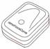
Included Components (per sensor)
|
· ritmoForceCurve Sensor |
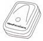 |
||
|
· Silicone Band |
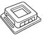 |
||
|
· Mounting Bracket |
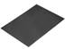 |
||
|
· Rubber under pad |
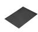 |
||
|
· Velcro or Silicone Strap |
|
Assembly Instructions
1. Seal the sensor: The silicone wedding band seals the sensor from water at the USB-C port and seam. Invert it so the flat smooth side contacts the sensor. Wrap it around the sensor as shown below.
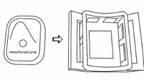
2. Mount the sensor: Insert the sensor (with band) into the plastic mount bracket. Ensure the button faces away from the curved underside. Verify the band has not shifted off the port or seam.
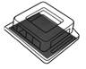
3. Pad the oar: Place the neoprene pad between the bracket and the oar shaft. It adds friction and protects the oar.
Figure 9
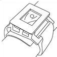
4. Secure with Velcro* or silicone* strap: Secure the bracket to the oar using the Velcro or silicone strap. Tighten firm enough to prevent slip from a forceful finish feather motion. The bracket curvature is sized to fit all oars with the extremes being standard sweeps and skinny shaft sculls.
|
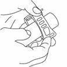 |
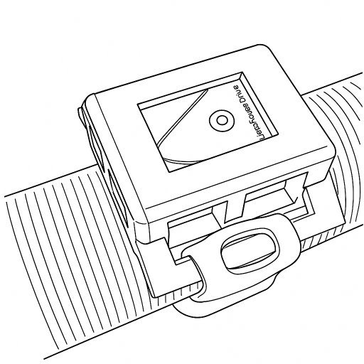 |
|
*We are currently evaluating strap material options, including Velcro and silicone, and expect to finalize our selection by early 2026.
Sensor Orientation
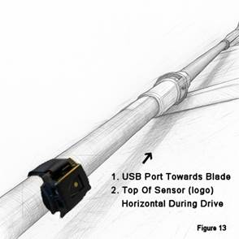
- Correct sensor orientation is important, but not critical due to on-water calibration. The USB-C port and text ritmoForceCurve needs to face the blade end (Figure 13).
- During the drive, the sensor button should be horizontal, during recovery, vertical (Figures 14 & 15). Mount the sensor this way before launch.
- Recommended sensor positions:
- Sensor 1: Between the handle and the button.
- Sensor 2: Roughly two-thirds of the way from the button to the blade.
|
Figure 14 |
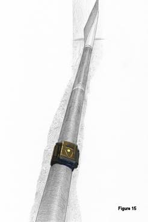 |
Connecting & Calibration
Figure 16
Connecting the Sensors:
- Turn on both sensors before placing the oars in the oarlocks or pushing off from the dock.
- Open the app → Main Menu → Connect Oar Sensors.
Figure 17
- Tap Turn on scanning for surrounding devices.
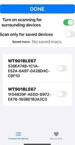
- If pairing for the first time, disable Scan only for saved devices.
- Select both sensors (they’ll appear by MAC address), then tap DONE.
 Figure 19
Figure 19
Oar Sensor Setup
- After sensors are connected go to Oar Sensor Setup
- Choose port or starboard.
- To check Sensor alignment, place oar blade face up on level floor with something between the back of the sleeve and the floor that keeps the back of the sleeve parallel to floor (Figure 20).
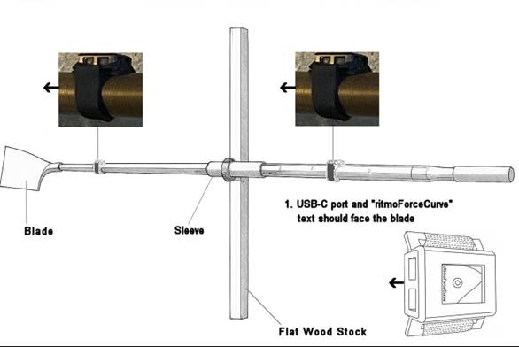
- Check to make sure angles for both sensors are within -5 to 5 deg. Adjust if necessary. The app auto calibrates while you are rowing but needs them to be reasonably close.
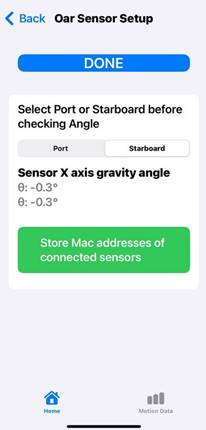
Figure 21
|
|
|
Bend Force Calibration
This
setting scales Watts and powerSplit but doesn’t affect:
- Max bend
- Force curve shape
- Stroke length
- Catch or Finish miss values.
Bend varies with sensor distance and oar stiffness. For now, adjust the value until powerSplit looks correct. In future updates, we’ll provide notes on how to calibrate using HR and steady-state watts.
Figure 22
Troubleshooting Table
|
Issue |
Possible Cause |
Solution |
|
Sensor not detected |
Bluetooth off |
Turn on sensor / enable Bluetooth |
|
Data spikes |
Loose bracket |
Check Velcro strap / reposition pad |
|
Bend reading inaccurate |
Misaligned sensor |
Adjust orientation / recalibrate |